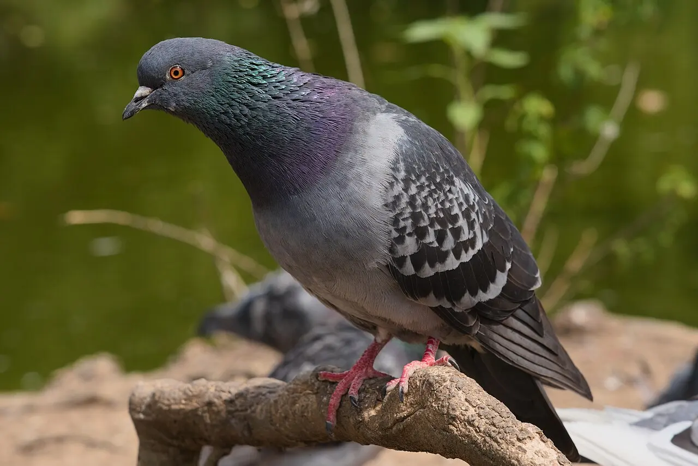
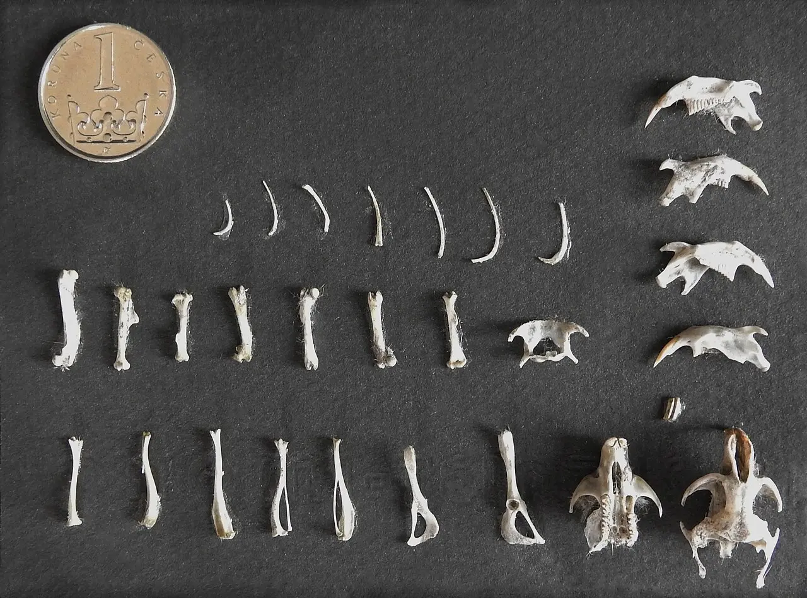

Módulo 2 Aula 8
Digestão
Sem dentes, sem uma barriga pesada: a ave tem um sistema digestório curto, com um “estômago que mói” e uma saída única para tudo.
- O caminho do alimento, do bico à cloaca
- Para que serve a moela e por que algumas aves engolem pedrinhas
- O que são as bolotas das corujas

Ave da aula
Pombo-doméstico Columba livia
O caminho do alimento
Como as aves não têm dentes[3], elas engolem o alimento inteiro, ou em pedaços grandes. Depois ele segue por um caminho com quatro paradas[1]. Toque em cada parte para saber o que ela faz.
Escolha uma parte do caminho.
Esquema simplificado, de perfil, com a cabeça à esquerda.
Descrição baseada em material didático de avicultura e em enciclopédia[1, 6]. Nem toda ave tem papo, e o formato varia de espécie para espécie.
Moela e pedrinhas
A é um estômago feito de músculo. Suas paredes grossas trituram o que a ave engoliu[1]. Em aves de moela grossa, comuns entre as que comem sementes, é frequente encontrar : as pedrinhas ajudam a moer[2, 1]. A forma da moela depende do que a ave come[2].
Bolotas de coruja
As corujas engolem presas pequenas, como camundongos, inteiras. A moela separa o que pode ser digerido do que não pode. Ossos, dentes e pelos se juntam em uma massa compacta, a , que a coruja regurgita pelo bico horas depois, muitas vezes no lugar onde dorme[4, 5].

Palavras novas
Teste rápido
Sem nota. Se errar, tente de novo.
Qual parte do estômago da ave é feita de músculos e tritura o alimento?
Por que algumas aves engolem pedrinhas?
O que é uma bolota de coruja?
Referências e leitura complementar
Onde conferir o que foi dito nesta aula. Os números entre colchetes no texto levam a estas fontes. Os links abrem em outra aba.
- Avian Digestive SystemeXtension · Small and Backyard Poultry · inglêsPapo, proventrículo, moela, pedrinhas e cloaca.
- Do all birds have gizzards?All About Birds · Cornell Lab of Ornithology · inglêsA moela e por que algumas aves engolem pedrinhas.
- Morphology of the AvesUCMP · Universidade da Califórnia, Berkeley · inglêsBico sem dentes, ossos ocos ligados aos sacos aéreos, quilha do esterno e fúrcula.
- What are owl pellets?All About Birds · Cornell Lab of Ornithology · inglêsPor que as corujas cospem bolotas com ossos e pelos.
- What Is an Owl Pellet?Audubon · inglês · leitura complementarComo a moela seleciona o que é digerido e o que vira bolota.
- Bird – Muscles, Organs, FlightEncyclopaedia Britannica · inglês · leitura complementarÓrgãos das aves: coração, digestão e outros.
Os endereços foram abertos e conferidos em 29/09/2026. Alguns sites de revistas científicas e de órgãos oficiais exigem verificação humana e não puderam ser testados por robô. Sites externos podem mudar ou sair do ar.
Para levar
Em três frases
- O alimento passa pelo papo, pelo proventrículo e pela moela antes de chegar ao intestino.
- Sem dentes, a ave tritura o alimento na moela, às vezes com a ajuda de pedrinhas.
- As corujas cospem bolotas com o que não conseguem digerir, como ossos e pelos.